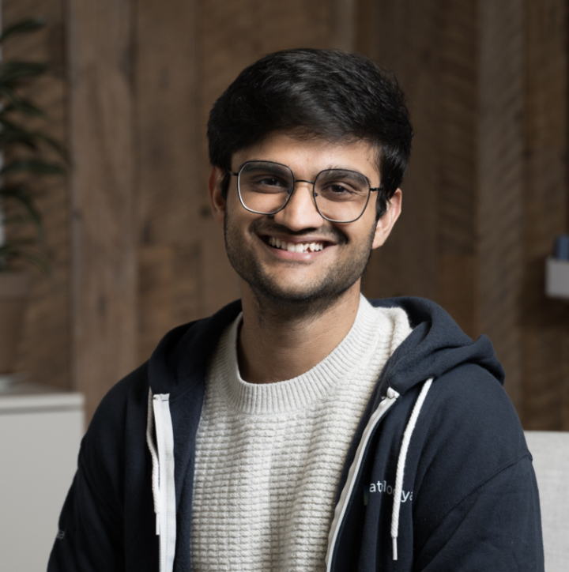

About
DATA-FM @ ICLR 2026
Welcome to the Navigating and Addressing Data Problems for Foundation Models Workshop (DATA-FM), co-located with ICLR 2026!
Foundation models (FMs) continue to progress rapidly, with advances in reasoning, multimodal understanding and generation, and emerging agentic behaviors. These developments rely on increasingly diverse forms of data, including large-scale pre-training corpora; post-training data such as instruction, preference, reasoning, and multi-turn interaction traces; aligned multimodal datasets; and high-quality synthetic data throughout the pipeline. As reliance on broad and heterogeneous data sources grows, longstanding challenges in curation, attribution, copyright, privacy, fairness, safety, and evaluation have become more pressing. Understanding and improving the data layer is now a central scientific and engineering priority for the next generation of FMs.
Building on the success of the previous two editions (DPFM @ ICLR 2024 and DATA-FM @ ICLR 2025), the 3rd DATA-FM workshop aims to deepen a principled understanding of data challenges across the FM pipeline. We welcome a broad community of participants, including but not limited to researchers and engineers working on pre-training, post-training, multimodality, and agentic systems; experts in law, policy, and economics; and practitioners from industry, including frontier labs and startups. Our goal is to clarify emerging data problems, identify actionable research opportunities, and foster interdisciplinary collaboration toward a more rigorous and responsible data ecosystem for AI.
Topics of interest include, but are not limited to:
- Data curation: collection, cleaning, deduplication, selection, and mixture optimization
- Data attribution, provenance, and valuation
- Data marketplaces and emerging economic models for data exchange
- Data scarcity, discovery, and sourcing strategies
- Synthetic data generation: quality, diversity, and mitigation of model collapse
- Principled methodologies for model evaluation and benchmark design
- Small-scale experimentation for guiding large-scale training (e.g., scaling laws, μP)
- Data-centric approaches to alignment and AI safety
- Responsible data practices: privacy, security, copyright, and fairness
- Legal, regulatory, and governance frameworks for data in foundation models
Calls
Call for Papers
Important Dates
-
Submission Deadline:
Feb 6th, 2026→Feb 8th, 2026, AoE— Submissions Closed - Notification of Acceptance:
March 1st, 2026, AoE— Passed - Camera-ready Deadline:
April 1st, 2026, 11:59pm AoE— Passed - Workshop Date: April 26th, 2026 (Riocentro Exhibition and Convention Center, Room 203 A+B, Rio de Janeiro, Brazil )
Regular Submission Instructions
Regular submissions may be research or position papers. All submissions are handled through OpenReview and must be anonymized for double-blind review. Papers should be no more than 10 pages (excluding references) and follow the Overleaf template adapted from ICLR. An optional appendix of any length may be included at the end of the draft after the references.
Our workshop does not have formal proceedings, i.e., it is non-archival. Accepted papers and their review comments will be posted on OpenReview in public (after the end of the review process), while rejected and withdrawn papers and their reviews will remain private.
We welcome submissions presenting novel research, ongoing or incomplete projects, manuscripts currently under review at other venues, as well as recently published results. In addition, we adopt the following policies:
- [Submission on previous conference papers] We allow submissions that have been accepted at major machine learning conferences within one year of ICLR 2026 (i.e., after May 2025), including papers recently accepted to the ICLR 2026 main conference. However, as workshops are primarily intended to showcase novel or ongoing research, submissions based on previously published work may be deprioritized for oral presentations.
- [Submission on previous journal papers] For work published in journals, we leave it to the authors to assess the novelty and relevance of the submission for the community. While the machine learning field moves quickly, this workshop aims to be inclusive of subareas that may progress at a different pace and values contributions that emphasize fundamental and long-lasting research.
Short Paper Submission Instructions (3–5 pages)
Since 2025, ICLR has discontinued the separate “Tiny Papers” track, and is instead requiring each workshop to accept short (3–5 pages in ICLR format, exact page length to be determined by each workshop) paper submissions, with an eye towards inclusion; see https://iclr.cc/Conferences/2025/CallForTinyPapers for a history of the ICLR tiny papers initiative. Authors of these papers will be earmarked for potential funding from ICLR, but need to submit a separate application for Financial Assistance that evaluates their eligibility. This application for Financial Assistance to attend ICLR 2026 will become available on https://iclr.cc/Conferences/2026/ at the beginning of February and close early March.
Building on last year's practice, our workshop continues to welcome short paper submissions intended to support underrepresented, under-resourced, and early-career researchers who may not yet have the means to submit full papers. This track is intended for work at the early stages of a project: for example, a concise but self-contained theoretical result, a novel observation from preliminary experiments, or a fresh perspective on an existing problem. The goal is to foster early-stage ideas and provide a platform for researchers to receive constructive feedback and guidance as they develop their work further.
Short papers will be peer reviewed. Submissions should be anonymized, 3–5 pages long (excluding references), using the same submission portal in OpenReview and following the same Overleaf template . In addition, please clearly add a tag [Short] at the beginning of the submission title.
In accordance with ICLR policy, AI-generated papers are not permitted in the short paper track.
Author-Reviewer Policy
The workshop program committee plays an important role in identifying and giving feedback on up-and-coming work that would most benefit from discussion and visibility at the workshop. To sustain our review and program selection processes, we expect at least one author of each submitted paper to volunteer to participate as a reviewer for the DATA-FM 2026 workshop.
Large Language Model Usage Policy
DATA-FM 2026 adheres to the ICLR 2026 policies on large language model (LLM) usage: https://blog.iclr.cc/2025/08/26/policies-on-large-language-model-usage-at-iclr-2026/.
In particular, authors may use LLM-based tools to assist with writing, editing, coding, or experimentation, provided that any such use is disclosed, and that all human authors take full responsibility for the content and originality of the submission.
Awards
Awards
Best Paper Awards & Oral Presentations
We selected 6 submissions for oral presentations (15 minutes each). From them, we will recognize one best paper award and one best paper honorable mention to acknowledge outstanding research contributions. (TBD)
Oral Presentations:
- The Capability Frontier: Benchmarks Miss 82% of Model Performance
Bradley Fowler, Ryan Smith, Daniel Thi Graviet, William Myers, Joshua Greaves, Narmeen Fatimah Oozeer, Antía García, Philip Quirke, Fazl Barez, Amir Abdullah, Shriyash Kaustubh Upadhyay - Cram Less to Fit More: Training Data Pruning Improves Memorization of Facts
Jiayuan Ye, Vitaly Feldman, Kunal Talwar - Anchored Decoding: Provably Reducing Copyright Risk for Any Language Model
Jacqueline He, Jonathan Hayase, Wen-tau Yih, Sewoong Oh, Luke Zettlemoyer, Pang Wei Koh - propella-1: Multi-Property Document Annotation for LLM Data Curation at Scale
Maximilian Idahl, Benedikt Droste, Björn Plüster, Jan Philipp Harries - Multi-Modal Data Mixtures via Latent Space Coupling for Vision-Language Model Training
Wanyun Xie, Francesco Tonin, Volkan Cevher - Olmix: A Framework for Data Mixing Throughout LM Development
Mayee F Chen, Tyler Murray, David Heineman, Matt Jordan, Hannaneh Hajishirzi, Christopher Re, Luca Soldaini, Kyle Lo
Early Career Free Registration
To promote diversity, equity, and inclusion, the workshop offers a limited number of free full ICLR 2026 conference registrations for early-career researchers and students. Awardees will be selected with priority given to early-career attendees.
How to Apply:
- Fill out this application form
- Deadline:
March 10th, 2026, AoE— Passed
Awardees: Abhranil Chandra, Jacqueline He, Lorena Raichle, Victor Moreli dos Santos, Tushar Shinde, Qingchuan Yang, Huaqing Zhang
Outstanding Reviewers Free Registration
The workshop values high-quality peer review. We offer a limited number of free full ICLR 2026 conference registrations for reviewers who provide exceptional reviews. This is a self-nominated award—if you have contributed outstanding reviews to our workshop, we encourage you to apply.
How to Apply:
- Fill out this application form
- Deadline:
March 10th, 2026, AoE— Passed
Awardees: Firas Darwish, Anmol Kabra
Accepted Papers
Accepted Papers
The complete list of accepted papers is available on OpenReview.
Workshop Program
Workshop Schedule (04/26/2026, 9am-5pm)
- In person location: Riocentro Exhibition and Convention Center, Room 203 A+B, Rio de Janeiro, Brazil
- ICLR page: https://iclr.cc/virtual/2026/workshop/10000798
All times listed below are in Brasília Time BRT (GMT-3).
| MORNING SESSION 🌅🕘 | |
| 9:00 - 9:10 AM | Opening Remarks 📖 |
| 9:10 - 9:40 AM |
Invited Talk: Baharan Mirzasoleiman 🤝🗣️ What Makes Good Post-Training Reasoning Data? From Theory to Efficient Data Curation AbstractPost-training has emerged as a critical stage for unlocking the reasoning capabilities of Large Language Models (LLMs). In particular, supervised fine-tuning (SFT) and reinforcement learning (RL) significantly shape how models perform multi-step reasoning, follow instructions, and generalize to new tasks. But, post-training performance is highly sensitive to the quality: diversity, and difficulty of the training data. First, I will discuss some recent theoretical work that provides insights into the characteristics of high-quality post-training data. Specifically, SFT data should be small, diverse and difficult and RL data should be large and not too difficult for the model being trained. Building on these insights, I will present principled and efficient algorithms for curating SFT and RL datasets that directly target examples which most effectively shape reasoning behavior, while dramatically reducing the cost of data creation. BioBaharan is an Assistant Professor in the Computer Science Department at UCLA. Her research aims to address sustainability, reliability, and efficiency of machine learning. She is mainly working on improving the big data quality, by developing theoretically rigorous methods to select the most beneficial data for efficient and robust learning. Besides, she is also interested in improving the models and learning algorithms. Before joining UCLA, she was a postdoctoral research fellow at Stanford University and received her Ph.D. in Computer Science from ETH Zurich. She received an ETH medal for Outstanding Doctoral Thesis, was selected as a Rising Star in EECS by MIT, and received an NSF Career Award, a UCLA Hellman Fellows Award and an Okawa Research Award. |
| 9:40 - 10:10 AM |
Invited Talk: Sewon Min 🤝🗣️ TBD |
| 10:10 - 10:30 AM | Coffee Break ☕ |
| 10:30 - 10:45 AM |
Oral Presentation 1: Mayee Chen 📊 Olmix: A Framework for Data Mixing Throughout LM Development AbstractData mixing—determining the ratios of data from different domains—is a first-order concern for training language models (LMs), but existing mixing methods have poorly understood design choices and assume that the set of domains remain fixed throughout development. We present Olmix, a framework that addresses two challenges encountered during LM development. First, the configuration space for developing a mixing method is not well understood—design choices across existing methods lack justification or consensus and overlook practical issues like data constraints. We conduct a comprehensive empirical study of this space, identifying which design choices lead to a strong mixing method. Second, the domain set evolves throughout LM development as datasets are revised and expanded—a problem setting largely unaddressed by existing works. We study how to efficiently recompute the mixture after the domain set is updated, given an existing mix from before the update. We introduce mixture reuse, a mechanism that reuses existing relative ratios and recomputes ratios only for domains affected by an update. Over a sequence of five domain-set updates mirroring real-world LM development, mixture reuse matches the performance of fully recomputing the mix after each update with 74% less compute and improves over training without mixing by 11.6% on downstream tasks. |
| 10:45 - 11:00 AM |
Oral Presentation 2: Fazl Barez 📊 The Capability Frontier: Benchmarks Miss 82% of Model Performance AbstractExisting benchmarks typically report accuracy for a single model on a single run. This systematically understates real-world LLM capabilities, particularly under heterogeneous data distributions: (i) different models get different questions correct according to their specializations, and (ii) given a budget, multiple generations can be sampled and selectively retained. To quantify this gap, we introduce the Capability Frontier: a Pareto frontier over a set of models that characterizes the best achievable performance at each cost level under optimal selection across models and generations (i.e., via an oracle). Our construction corrects for two opposing biases: underestimation from single-model evaluation and overestimation from taking maxima over noisy samples. We study 21 LLMs across 16 widely used benchmarks spanning coding, reasoning, medicine, factuality, instruction following, and agentic tasks, comparing Capability Frontier performance at matched cost to each benchmark's top-performing model. Correcting for single-model evaluation yields a 54% error rate reduction; additionally correcting for single runs yields an 82% improvement, with SOTA accuracy matched at 85% cost reduction. Complementing these empirical results, we use controlled probabilistic simulations to show that higher query topic entropy produces a near-monotonic increase in the performance gap between oracle routing and the best single model. Our findings suggest collective LLM capabilities are substantially underestimated, with implications for evaluation and deployment in data-heterogeneous, multi-domain settings. |
| 11:00 - 11:15 AM |
Oral Presentation 3: Kunal Talwar 📊 Cram Less to Fit More: Training Data Pruning Improves Memorization of Facts AbstractLarge language models (LLMs) can struggle to memorize factual knowledge in their parameters, often leading to hallucinations and poor performance on knowledge-intensive tasks. In this paper, we formalize fact memorization from an information-theoretic perspective and study how training data distributions affect fact accuracy. We show that fact accuracy is suboptimal (below the capacity limit) whenever the amount of information contained in the training data facts exceeds model capacity. This is further exacerbated when the fact frequency distribution is skewed (e.g. a power law). We propose data selection schemes based on the training loss alone that aim to limit the number of facts in the training data and flatten their frequency distribution. On semi-synthetic datasets containing high-entropy facts, our selection method effectively boosts fact accuracy to the capacity limit. When pretraining language models from scratch on an annotated Wikipedia corpus, our selection method enables a GPT2-Small model (110m parameters) to memorize 1.3X more entity facts compared to standard training, matching the performance of a 10X larger model (1.3B parameters) pretrained on the full dataset. |
| 11:15 AM - 12:00 PM | Poster Session I 🪧 |
| 12:00 - 1:30 PM | Lunch Break 🍲 |
| AFTERNOON SESSION 🌇🕐 | |
| 1:30 - 2:00 PM |
Invited Talk: Juan Carlos Niebles 🤝🗣️ TBD |
| 2:00 - 2:15 PM |
Oral Presentation 4: Jacqueline He 📊 Anchored Decoding: Provably Reducing Copyright Risk for Any Language Model AbstractModern language models (LMs) tend to memorize portions of their training data and reproduce verbatim spans. When the underlying sources are sensitive or copyright-protected, such reproduction raises issues of consent and compensation for creators and compliance risks for developers. We propose ANCHORED DECODING, a plug-and-play inference-time method for suppressing verbatim reproduction: it enables decoding from any risky LM trained on mixed-license data by keeping generation in bounded proximity to a permissively trained safe LM. ANCHORED DECODING does so by adaptively allocating a user-chosen information budget over the generation trajectory and enforcing per-step constraints that yield a sequence-level guarantee, enabling a tunable risk–utility trade-off. To make ANCHORED DECODING practically useful, we introduce a new permissively trained safe model (TinyComma 1.8B), as well as ANCHORED_Byte DECODING, a bytelevel variant of our method that enables cross-vocabulary fusion via the ByteSampler framework (Hayase et al., 2025). We evaluate our methods across six model pairs on long-form evaluations of copyright risk and utility. ANCHORED and ANCHORED_Byte DECODING define a new Pareto frontier, preserving near-original fluency and factuality while eliminating up to 75% of the measurable copying gap (averaged over six copying metrics) between the risky baseline and a safe reference, at a modest inference overhead. |
| 2:15 - 2:30 PM |
Oral Presentation 5: Arshia Afzal 📊 Multi-Modal Data Mixtures via Latent Space Coupling for Vision-Language Model Training AbstractVision-Language Models (VLMs) are typically trained on a diverse set of multi-modal domains, yet current practices rely on costly manual tuning. We propose MaD-Mix, a principled and computationally efficient framework that derives multi-modal data mixtures for VLM training. MaD-Mix formulates data mixing as modality-aware domain alignment maximization and obtains closed-form multi-modal alignment scores from the Fenchel dual through inter-modal coupling variables. MaD-Mix systematically handles domains with missing modalities, allowing for the integration of language-only domains. Empirical evaluations across 0.5B and 7B models demonstrate that MaD-Mix accelerates VLM training across diverse benchmarks. MaD-Mix matches human-tuned data mixtures using 22% fewer training steps in image-text instruction tuning. In complex tri-modal video-image-text scenarios, where manual tuning becomes impractical, MaD-Mix boosts average accuracy over uniform weights, with negligible mixture computation overhead (<1 GPU-hour), enabling scalable mixture design for modern VLM pipelines. |
| 2:30 - 2:45 PM |
Oral Presentation 6: Maximilian Idahl 📊 propella-1: Multi-Property Document Annotation for LLM Data Curation at Scale AbstractLarge language models (LLMs) can struggle to memorize factual knowledge in their parameters, often leading to hallucinations and poor performance on knowledge-intensive tasks. In this paper, we formalize fact memorization from an information-theoretic perspective and study how training data distributions affect fact accuracy. We show that fact accuracy is suboptimal (below the capacity limit) whenever the amount of information contained in the training data facts exceeds model capacity. This is further exacerbated when the fact frequency distribution is skewed (e.g. a power law). We propose data selection schemes based on the training loss alone that aim to limit the number of facts in the training data and flatten their frequency distribution. On semi-synthetic datasets containing high-entropy facts, our selection method effectively boosts fact accuracy to the capacity limit. When pretraining language models from scratch on an annotated Wikipedia corpus, our selection method enables a GPT2-Small model (110m parameters) to memorize 1.3X more entity facts compared to standard training, matching the performance of a 10X larger model (1.3B parameters) pretrained on the full dataset. |
| 3:00 - 3:20 PM | Coffee Break ☕ |
| 3:20 - 3:50 PM |
Invited Talk: Fred Sala 🤝🗣️ The Art & Science of Benchmarking Agents AbstractOur ability to measure AI has been outpaced by our ability to develop it, and this eval gap is one of the most important problems in AI. We need more enduring benchmarks to close this gap, and consequently advance entire new vectors of capabilities for the field. In this talk, I'll share our insights into evaluating agents, drawing from experience working with nearly all frontier labs and many of our academic collaborators. We'll discuss the science (i.e., mechanics that make benchmarks rigorous and effective) and art (i.e., intangibles driving ambitious and enduring benchmarks) of building great benchmarks. I'll close by sharing some of the learnings from Open Benchmarks Grants— a $3M initiative in partnership with Hugging Face, Together AI, Prime Intellect, Factory, and others— and highlighting some of the projects we're most excited about funding. BioFrederic Sala is an Assistant Professor in the Computer Sciences Department at the University of Wisconsin-Madison and the Chief Scientist at Snorkel AI. His research studies the fundamentals of data-driven systems and machine learning, with a focus on data-centric AI and foundation models. Previously, he was a postdoctoral researcher at Stanford and received his Ph.D. in electrical engineering from UCLA. He and his group received the 2024 DARPA Young Faculty Award, the UW-Madison SACM Students' Choice Professor of the Year Award, a best student paper runner-up award at UAI. |
| 3:50 - 4:05 PM | Industry Lightning Talk: Snorkel AI 👥💬 |
| 4:05 - 4:10 PM | Closing Remarks 📗 |
| 4:10 - 5:00+ PM | Poster Session II 🪧 |
Talks
Invited Speakers
Organization
Workshop Organizers
Luxi He
Princeton UniversityYuzheng Hu
University of Illinois Urbana-ChampaignMartin Jaggi
EPFLRuoxi Jia
Virginia Tech
Pratyush Maini
DatologyAI / CMUMonica Ribero
GoogleJiachen (Tianhao) Wang
Princeton UniversityZheng Xu
MetaProgram Committee
Abhay Kumar
Abhaya Trivedi
Ahmed M. Abdelmoniem
Ajay Yadav
Alfy Samuel
Amin Banayeeanzade
Amr Abourayya
Anmol Goel
Anmol Kabra
Arinbjörn Kolbeinsson
Arun Ganesh
Aryansh Shrivastava
Aurélien Bellet
Benedikt Droste
Bowen Tan
Buxin Su
Cathy Jiao
Chendi Wang
Chunhui Zhang
Clara Na
Daogao Liu
Dario Loi
David Heineman
Dequan Wang
Dhruv Nathawani
Divyansh Pareek
Eddison Pham
Erchi Wang
Fan Wu
Firas Darwish
Francesco Tonin
Frederic Sala
Gaurav Rohit Ghosal
Götz-Henrik Wiegand
Guy Rosman
Haibo Yang
Haodong Wen
Haonan Duan
Harsh Raj
Haruka Kiyohara
Hongbin Liu
Iacopo Masi
Iris Dominguez-Catena
Ishika Agarwal
Jacqueline He
Jalaj Upadhyay
James Flemings
Jan Geffert
Jasin Cekinmez
Jhalak Gupta
Jialu Wang
Jiayi Wang
Jiayuan Ye
Jingtan Wang
Jingwei Zuo
Jingyan Shen
Jinhyun So
Jinlong Pang
Joris Guerin
Junwei Deng
Kevin Christian Wibisono
Kijung Shin
Lalchand Pandia
Lie He
Lingcheng Kong
Lingxiao Wang
Lorenzo Rossi
Lorenzo Sani
Lun Wang
Luyang Zhang
Mahule Roy
Manoj Saravanan
Maximilian Idahl
Mayee F Chen
Mehak
Meng Ding
Michael Handley
Michael Johnston
MingYu Lu
Miroojin Bakshi
Murali Emani
Neslihan Bulut
Nick Rui
Nikola Konstantinov
Peizhi Niu
Pingbang Hu
Qiaobo Li
Qirun Dai
Quan Gan
Reem I. Masoud
Robin Staab
Rohit Kumar Salla
Ryan McKenna
Ryan Wang
Ryo Mitsuhashi
Saksham Rastogi
Salma Kharrat
Sattvik Sahai
Sebastian U Stich
Shaobo Wang
Shiqiang Wang
Shixuan Liu
Simin Fan
Simon Park
Sneha Kudugunta
Spencer Hong
Stefanos Laskaridis
Swastik Nanda
Tianyi Xu
Tianyuan Zou
Tiejin Chen
Timo Hromadka
Tom Julian Viering
Umar Farooqi
Valentin NOËL
Valter Hudovernik
Vethavikashini Chithrra Raghuram
Victor Moreli dos Santos
Vijay Prakash Dwivedi
Vishakh Padmakumar
Wanyun Xie
Wei-Ning Chen
Weida Li
Wenkai Li
Xiaoqing Sun
Xinjie Shen
Xinyan Velocity Yu
Xinyang Lu
Xuan Ouyang
Yae Jee Cho
Yanlin Zhang
Yanqi Luo
Yao Tong
Yasuhiro Yoshida
Yi Sui
Yi Zhou
Yifan Zhang
Yifei Zhang
Yingrui Ji
Yu-Chen Den
Yurong Liu
Zeman Li
Zhengyao Gu
Zhengyuan Jiang
Zhiliang Chen
Ziao Yang
Zichen Wen
Zichun Yu
Zilin Du
Zillur Rahman
Sponsors
Sponsors